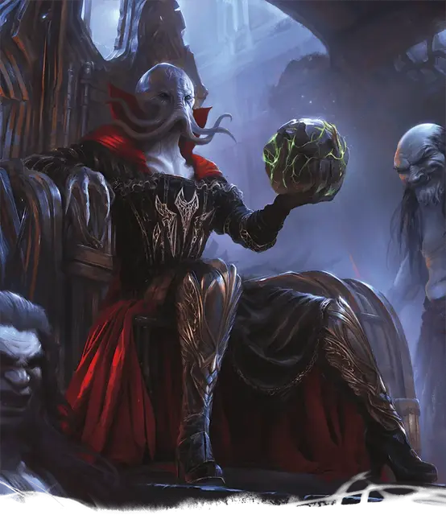

Кунбраксель
Qunbraxel
Средняя Аберрация (Свежеватель разума, Колдун), законно-злая

Класс Доспеха 12 (15 с доспехи мага [mage armor])
Хиты 112 (15к8 + 45)
Скорость 30 футов
| мод | спас | ||
|---|---|---|---|
| СИЛ | 11 | +0 | +0 |
| ЛОВ | 14 | +2 | +2 |
| ТЕЛ | 17 | +3 | +3 |
| мод | спас | ||
|---|---|---|---|
| ИНТ | 19 | +4 | +8 |
| МДР | 15 | +2 | +6 |
| ХАР | 19 | +4 | +8 |
Навыки Восприятие +6, Магия +8, Проницательность +6, Скрытность +6
Чувства тёмное зрение 120 футов, пассивное Восприятие 16
Языки Глубинная речь, Подземный, Телепатия 120 фт.
Опасность 9 (5000 опыта)
Бонус мастерства +4
Особенности
Сопротивление магии. Кунбраксель совершает с преимуществом спасброски от заклинаний и прочих магических эффектов.
Действия
Мультиатака. Кунбраксель совершает две атаки Жуткой стрелой или одну атаку Жуткой стрелой и одну атаку Щупальцем.
Щупальце. Рукопашная атака оружием: +8 к попаданию, досягаемость 5 футов, одно существо. Попадание: 15 (2к10 + 4) урона психической энергии. Если цель Среднего размера или меньше, она становится схваченой (Сл высвобождения 16) и должна преуспеть в спасброске Интеллекта Сл 16 или стновится ошеломлённой до тех пор, пока цель не перестанет быть схваченой.
Жуткая стрела. Дальнобойная атака заклинанием: +8 к попаданию, дистанция 120 футов, одна цель. Попадание: 20 (3к10 + 4) силового урона.
Извлечь мозг. Рукопашная атака оружием: +8 к попаданию, досягамость 5 футов, один ошеломлённый Гуманоид, которого схватил Кунбраксель. Попадание: 55 (10к10) колющего урона. Если этот урон снижает хиты цели до 0, Кунбраксель убивает её, извлекая и пожирая её мозг.
Взрыв разума (перезарядка 5–6). Кунбраксель магическим образом излучает психическую энергию в виде 60-футового конуса. Каждое существо в этой области должно преуспеть в спасброске Интеллекта Сл 16, иначе оно получит 26 (5к8 + 4) урона психической энергиейи ошеломляется на 1 минуту. Ошеломлённое существо может повторять спасбросок в конце каждого своего хода, прекращая эффект на себе в случае успеха.
Использование заклинаний (псионика). Базовой характеристикой Кунбракселя является Харизма. Он может накладывать следующие заклинания, не нуждаясь ни в каких компонентах (Сл спасброска заклинания 16):
• Неограниченно: обнаружение магии [detect magic], обнаружение мыслей [detect thoughts], левитация [levitate], доспехи мага [mage armor] (только на себя), волшебная рука [mage hand] (рука невидима), фокусы [prestidigitation]
• 2/день каждое: смятение [confusion], послание [sending], телекинез [telekinesis]
• 1/день каждое: подчинение личности [dominate person], уход в иной мир [plane shift] (только на себя)